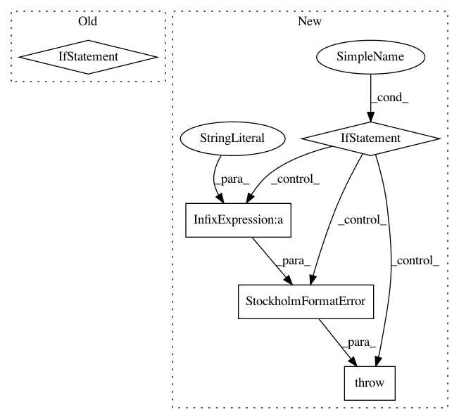

91701dae31f22bbea9e6d6ab9c4d84a1cf7b23be,skbio/io/format/stockholm.py,,_tabular_msa_to_stockholm,#Any#Any#,685
Before Change
for index, dictionary in enumerate(gf_feature_data):
fh.write("//=GF RN [%s]\n" % str(index+1))
for feature in reference_tags:
if feature in dictionary:
fh.write("//=GF %s %s\n" % (feature,
dictionary[feature]))
else:
fh.write("//=GF %s %s\n" % (gf_feature, gf_feature_data))
unpadded_data = []
After Change
fh.write("//=GF TN %s\n" % tree_id)
fh.write("//=GF NH %s\n" % tree)
elif gf_feature == "RN":
if not isinstance(gf_feature_data, list):
raise StockholmFormatError("Expected "RN" to contain a list "
"of dictionaries, got %s."
% gf_feature_data)
for ref_num, dictionary in enumerate(gf_feature_data, start=1):
fh.write("//=GF RN [%d]\n" % ref_num)
for feature in dictionary:
if feature not in _Reference_Tags:
In pattern: SUPERPATTERN
Frequency: 3
Non-data size: 5
Instances
Project Name: biocore/scikit-bio
Commit Name: 91701dae31f22bbea9e6d6ab9c4d84a1cf7b23be
Time: 2016-06-02
Author: kestrel.gorlick@gmail.com
File Name: skbio/io/format/stockholm.py
Class Name:
Method Name: _tabular_msa_to_stockholm
Project Name: biocore/scikit-bio
Commit Name: 91701dae31f22bbea9e6d6ab9c4d84a1cf7b23be
Time: 2016-06-02
Author: kestrel.gorlick@gmail.com
File Name: skbio/io/format/stockholm.py
Class Name: _MSAData
Method Name: add_gf_metadata
Project Name: biocore/scikit-bio
Commit Name: 6b4a0808dd2fc9c7daf232f8adbd5ba443436550
Time: 2016-02-10
Author: kestrel.gorlick@gmail.com
File Name: skbio/io/format/stockholm.py
Class Name:
Method Name: _check_for_malformed_line